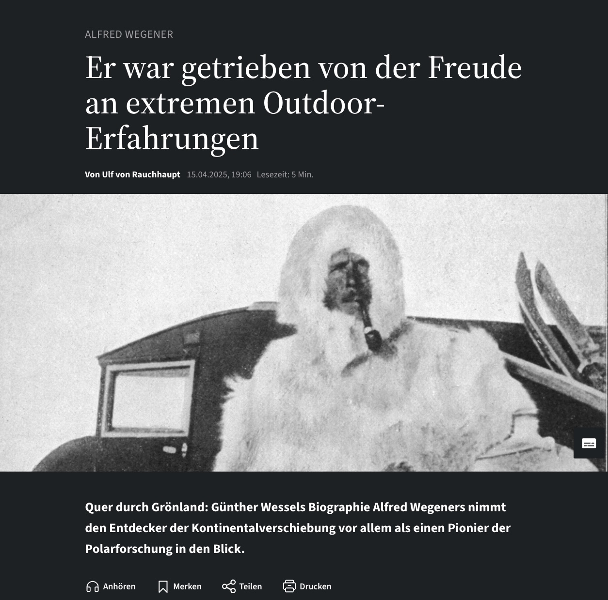
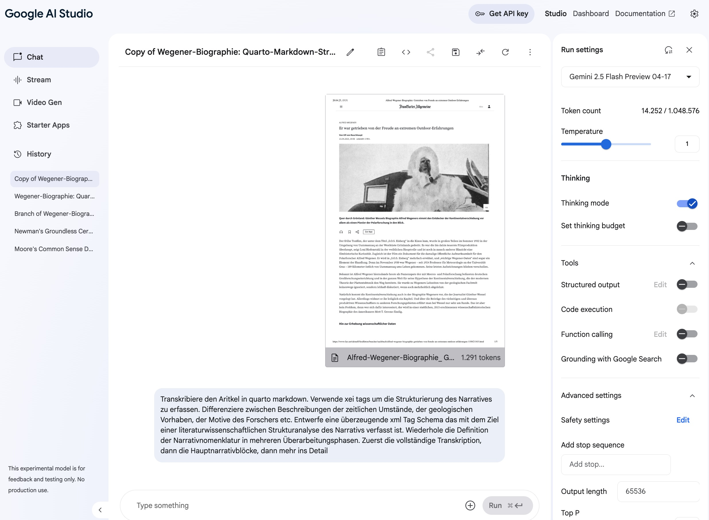

Strukturanalyse
1 Übung 1: Hermeneutische Strukturanalyse von Narrativen

Eine Buchrezension aus der FAZ am Sonntag von Ulf von Rauchhaupt über den Polarforscher Alfred Wegener eröffnet die Textgrundlage für die erste hermeneutische Übung. Dieser wissenschaftsjournalistische Review besticht durch seine Qualität in Struktur, Sprache und Informationsvermittlung. Deshalb wählen wir ihn als exemplarisches Beispiel für die Analyse. Das PDF, einfach durch Abspeichern der Webseite gewonnen, enthält zwar Werbung und andere irrelevante Elemente. Die KI extrahiert und analysiert jedoch problemlos den eigentlichen Review-Text – was die fortgeschrittenen Fähigkeiten moderner KI-Systeme unterstreicht.
Die Übung strukturiert diesen Artikel literaturwissenschaftlich und identifiziert seine charakteristischen Merkmale. Wir fragen uns: Welche spezifischen Elemente machen einen wissenschaftsjournalistischen Review besonders lesbar und verständlich? Eine detaillierte Analyse entwickelt eine differenzierte Typologie für wissenschaftliche Reviews, die wesentliche Strukturmerkmale, stilistische Eigenschaften und argumentative Muster festhält. Diese Typologie liefert anschließend ein Schema oder Template für eigene wissenschaftsjournalistische Arbeiten.
2 Hermeneutische Zielsetzung und praktische Durchführung
Wir verfolgen das zentrale hermeneutische Ziel, systematisch eine Typologie für hochwertige Review-Texte zu entwickeln, indem wir den Rauchhaupt-Artikel genau analysieren. Wir berücksichtigen dabei sowohl formale Aspekte (Aufbau, Gliederung, Textlänge) als auch inhaltliche Merkmale (Argumentationsführung, Bewertungskriterien, Kontextualisierung). Diese umfassende Typologie liefert eine fundierte Vorlage für das Verfassen weiterer qualitativ hochwertiger Reviews in verschiedenen wissenschaftlichen Kontexten.
Die Übung verläuft in drei aufeinander aufbauenden Schritten:
- Wir erarbeiten ein detailliertes Schema für Review-Besprechungen anhand des Rauchhaupt-Artikels und identifizieren wesentliche Strukturmerkmale und rhetorische Strategien.
- Wir wählen einen anderen Buchinhalt oder eine bedeutsame Episode aus der Wissenschaftsgeschichte, die sich für eine ähnliche Besprechung eignet.
- Wir leiten die KI präzise mit Hilfe des erarbeiteten hermeneutischen Schemas an, damit sie eine entsprechende Buchbesprechung erstellt, die die identifizierten Qualitätsmerkmale aufweist.
Dieses anspruchsvolle Ziel erfordert konzentrierte analytische Arbeit. Schon aussagekräftige Teilziele erfüllen die Erwartungen der Sitzung und zeigen, wie wir hermeneutische Prinzipien praktisch anwenden.
3 Google AI Studio

Wir arbeiten praktisch in Google AI Studio mit seiner charakteristischen Spaltenstruktur und spezifischen Benutzerschnittstelle. Die linke Spalte enthält zwar derzeit für unser Vorhaben nicht unmittelbar relevante Elemente („Stream“, „Video Gen“, „Starter Apps“), lässt sich aber für eine bessere Übersicht ausblenden. Das lenkt den Fokus auf die wesentlichen Arbeitsbereiche.
Wir interagieren mit der KI im Chat-Modus, ähnlich wie bei ChatGPT, jedoch mit erweiterten Analysefunktionen. Der Chat-Prompt steht oben links im Mittelfeld, das Chat-Feld direkt darunter. Besonders wertvoll für die kontinuierliche Seminararbeit: Die „History“-Funktion speichert alle früheren Chats automatisch und erleichtert jederzeit den Überblick bei der Bearbeitung mehrerer paralleler Themen. Diese Chats bleiben dauerhaft erhalten, auch bei Sitzungsunterbrechungen.
Die durchdachte Benutzeroberfläche teilt sich in drei funktional distinkte Hauptbereiche:
Das Hauptfenster (Mittelfeld) erlaubt die direkte Chat-Interaktion mit der KI und zeigt sowohl die eigenen Eingaben als auch die KI-Antworten in chronologischer Reihenfolge. Hier führen wir den eigentlichen Dialog mit dem System, der die hermeneutische Analyse vorantreibt.
Links sehen wir die vollständige Historie aller bisher geführten Chats, die wir zum späteren Wiederaufruf persistent speichern können. Diese Chronik hilft uns, frühere Analyseschritte nachzuvollziehen oder erfolgreiche Prompt-Strategien in neuen Kontexten wiederzuverwenden.
Ein kleiner Haken am unteren Ende der linken Spalte blendet diese bei Bedarf aus und verbessert so besonders bei der Arbeit auf kleineren Bildschirmen die Übersichtlichkeit.
Rechts finden wir in der „Run Settings“-Spalte alle Steuerelemente zur präzisen Konfiguration der KI-Modelle, einschließlich der Auswahl spezifischer Modellvarianten, Temperatureinstellungen und maximaler Tokenlimits.
Die innovative Plattform verschafft uns Zugang zu verschiedenen Google-Modellen mit unterschiedlichen Leistungsprofilen und Kostenstufen. Diese heben sich in ihren spezifischen Fähigkeiten und Anwendungsschwerpunkten deutlich voneinander ab. Im kompetitiven KI-Markt positionieren sich die Google-Modelle aktuell als preisgünstigste Optionen bei vergleichbarer Leistungsfähigkeit.
4 Modelle: Flash vs. Pro
Die verfügbaren Flash- und Pro-Modellvarianten unterscheiden sich in mehreren entscheidenden Dimensionen. Diese sollten wir je nach Anwendungsfall sorgfältig abwägen:
Preisstruktur: Die kostengünstigen Preview-Modelle (Flash und Pro Preview) verursachen deutlich geringere Betriebskosten als die leistungsfähigere Pro-Version mit vollem Funktionsumfang. Für viele Standardanwendungen genügen die Preview-Modelle jedoch völlig.
Thinking-Fähigkeit: Der signifikanteste qualitative Unterschied zeigt sich im Umfang und der Tiefe des “Thinking”-Sektors. Flash bewältigt einfachere Reasoning-Aufgaben. Die Pro-Version übertrifft diese Fähigkeiten jedoch bei komplexen Denkaufgaben, mehrstufigen logischen Schlussfolgerungen und Analysen, die konzeptuelle Transferleistungen erfordern, deutlich.
Verarbeitungsgeschwindigkeit: Bei der Antwortgeschwindigkeit punktet Flash erheblich: Es arbeitet etwa sechsmal schneller als die Pro-Variante, was besonders bei iterativen Prozessen oder zeitkritischen Anwendungen relevant sein kann.
Sprachliche Differenzierung: Interessanterweise hängt die Sprachqualität nicht linear von der Versionsnummer oder Aktualität der Modelle ab: Ältere oder auf bestimmte Domänen spezialisierte Modellvarianten übertreffen neuere Generationen gelegentlich in Vielfalt, stilistischer Raffinesse und Nuancierung. Diese Beobachtung läuft der intuitiven Annahme einer stetigen Verbesserung über Modellgenerationen hinweg zuwider.
5 KI für spezifische Aufgaben
Die KI wendet nicht nur existierende standardisierte TEI-Elemente an, sondern identifiziert und markiert auch projektspezifische, nicht-standardisierte Elemente nach individuellen Forschungsbedürfnissen. So erkennt und klassifiziert sie beispielsweise zeitliche Einordnungen, geologische Beschreibungen, motivationspsychologische Aspekte eines Forschers oder methodologische Überlegungen differenziert nach ihrer semantischen Funktion.
Dabei bekommt die KI keine vorgefertigte, starre Lösungsschablone. Sie entwickelt vielmehr selbständig einen überzeugenden Analyse- und Kategorisierungsplan, um die spezifische Anforderung zu bewältigen. Diese bemerkenswerte interpretative Flexibilität hilft uns besonders bei der Arbeit mit heterogenen historischen Quellen oder interdisziplinären Texten, wenn wir spezifische, nuancierte Forschungsfragen beantworten müssen. Diese gehen über standardisierte Kategorisierungsschemata hinaus.
6 Prompt als komplexe Anfrage
Die anfängliche, oft relativ knappe Textanfrage („Prompt“) verwandelt sich im transparenten „Thinking Block“ in methodisch durchdachte, explizite Lösungsschritte. Der “Run”-Button startet diese komplexe, nun auch vorbereitende Maßnahmen und Qualitätssicherungsschritte umfassende Anfrage und initiiert die eigentliche Verarbeitung.
6.1 Der Planungsprozess der KI
Die KI transformiert die gestellte Aufgabe in einen schrittweisen, im “Thinking Block” für Nutzende vollständig sichtbaren Planungsprozess. Dieser Prozess erlaubt uns Einblicke in die Herangehensweise des Systems. Zunächst klärt die KI präzise das Ziel, die Rahmenbedingungen und die gewünschten Ergebnisformate – vergleichbar mit einer menschlichen Aufgabenanalyse.
Eine typische Strukturanalyse eines wissenschaftlichen Texts durchläuft mehrere logisch aufeinander aufbauende Phasen:
- Sie erkennt den Text vollständig per OCR und filtert irrelevante Elemente wie Werbung oder Seitenränder.
- Sie identifiziert systematisch strukturelle und paratextueller Elemente wie Titel, Autor, Publikationsdatum, Zwischenüberschriften und Bildunterschriften.
- Sie kategorisiert literaturwissenschaftlich fundiert den narrativen Fluss, die Argumentationsstruktur und die rhetorische Gestaltung des Textes.
6.2 Definition des Schemas durch die KI
Im weiteren Planungsverlauf entwirft die KI selbständig ein differenziertes Schema zur Textklassifikation mit spezifischen semantischen Tags wie “Temporal” für historische Zeitbezüge, “Geological” für geologische Themen oder “Methodological” für Diskussionen wissenschaftlicher Verfahren.
Besonders faszinierend für unsere hermeneutische Arbeit: Wir können eigene interpretative Klassifikationskonventionen entwerfen. Diese heben genau die für die jeweilige Forschungsfrage interessanten Textaspekte systematisch hervor und setzen sie in Beziehung.
6.3 Das Ergebnis: Die Analyse
Das Ergebnis des komplexen Verarbeitungsprozesses erscheint als übersichtlich strukturierter Block im anpassbaren Markdown-Stil mit vollständigen Metadaten zur Provenienz und einer differenzierten Textanalyse. Die Gliederung spiegelt den inhaltlichen und formalen Textaufbau wider. Sie umfasst typischerweise essentielle Abschnitte wie Einleitung, bibliographische Details, historischen Kontext und thematische Unterteilungen mit Querverweisen.
6.4 Interaktion und Iteration mit dem Plan
Ein herausragendes Merkmal dieser fortschrittlichen Arbeitsumgebung: Der Planungsprozess ist für uns Nutzende vollständig transparent. Wir können den “Thinking Block” direkt kopieren, modifizieren und anpassen. So verfeinern wir spezifische Kategorien, präzisieren Formulierungen oder nehmen konzeptuelle Ergänzungen vor. Den überarbeiteten Plan geben wir dann als neue Aufgabe ein. Das ermöglicht mehrfache iterative Optimierungen im hermeneutischen Zirkel.
7 Seminarplan und Ausblick
Die heutige Sitzung konzentriert sich auf die praktische Handhabung der AI Studio Umgebung und erste methodische Schritte der systematischen Textanalyse. Die zentrale hermeneutische Kernaufgabe: Wir erschließen analytisch ein exemplarisches Text-Template, wie am Beispiel des Rauchhaupt-Artikels demonstriert, und integrieren dieses strukturelle und stilistische Wissen anschließend kreativ in die KI zur Erzeugung vergleichbarer Texte.
Die grundlegenden Fragen des Seminars knüpfen direkt an die beiden fundamentalen hermeneutischen Säulen an. Diese haben wir in der vorigen Sitzung umfassend diskutiert: erstens die tiefgreifende Interpretation von Texten, Kunstwerken oder Symbolen (Inhaltserschließung) und zweitens die reflektierte Auslegung dieser Interpretation (Inhaltsdarstellung und -vermittlung).
In den kommenden drei Wochen konzentrieren wir uns in der praktischen Übung auf den ausgewählten Rauchhaupt-Aufsatz und entwickeln systematisch ein differenziertes Schema für wissenschaftliche Rezensionen im digitalen Zeitalter. Der kollegiale Austausch über individuelle Erfahrungen, Erkenntnisse und Herausforderungen bei dieser Aufgabe bildet einen zentralen, diskursiven Bestandteil des Seminars. Er fördert die gemeinsame methodologische Reflexion.
Eine intellektuell reizvolle Alternative: Wir untersuchen strukturanalytisch ein exemplarisches Interview, um ein transferfähiges Interview-Schema zu entwickeln. Hierbei fragen wir uns methodisch, ob die KI ein vorliegendes Interview in eine neue, ansprechende und lesbare Form überführen kann, ohne den inhaltlichen Kern zu verfälschen.
8 Beispiele für mögliche Themen und Aufgaben
Das Seminar zeigt verschiedene thematisch anspruchsvolle Möglichkeiten für eigenständige hermeneutische Projekte:
Historische Textanalyse: Akkadianische Quellen zum dramatischen Untergang des persischen Reiches aus der einzigartigen Perspektive eines babylonischen Astronomen während Alexanders Invasion. Diese faszinierende Perspektive ermöglicht die Rekonstruktion wissenschaftlicher und kultureller Transformationsprozesse in Umbruchszeiten. Wir zielen auf eine wissenschaftlich fundierte, zitierfähige Analyse, die relevante Originalquellen präzise einbezieht und kontextuell einbettet.
Gedichtinterpretation: Wir analysieren tiefgehend ein ausgewähltes Brecht-Gedicht und bauen methodisch auf einer klassischen Interpretation von Walter Jens auf (verfügbar möglicherweise aus einer aufschlussreichen Videoaufzeichnung der 1970er Jahre). Diese Meta-Interpretation wirft die methodologisch spannende Frage auf: Kann die KI diese interpretative Vorlage als strukturelles und konzeptuelles Muster für weitere, eigenständige Gedichtanalysen produktiv nutzen?
Bildinterpretation: Wir analysieren kunsthistorisch informiert Leonardo da Vincis ikonische Menschendarstellung. Dabei synthetisieren wir systematisch visuelle Bildinformationen und kontextualisierende textuelle Quellen zu einer kohärenten kunsthistorischen Interpretation. Diese integriert formale, symbolische und kulturgeschichtliche Aspekte.
Wir sollten die gewählten Aufgaben mit zwei bis drei präzisen, wohlformulierten Prompts bearbeiten können. Sie sollten einen klar definierten, spezifischen Aspekt des gewählten Themas fokussieren, damit wir Tiefe statt enzyklopädischer Breite erreichen.
9 Organisatorisches
Wir treffen uns zum nächsten Seminar in drei Wochen, da Feiertage dazwischenliegen. Bis dahin sollte jeder seine individuelle Themenwahl abgeschlossen und konzeptuell durchdacht haben. In der kommenden Sitzung legen wir die Themen verbindlich fest. Das ermöglicht kontinuierliches Arbeiten und vermeidet weitere thematische Fluktuation. Die erarbeiteten AI Studio Lösungen teilen wir über persistente Links und diskutieren sie gemeinsam im Plenum. Dabei präsentieren die Studierenden nicht nur ihre konkreten Ergebnisse, sondern reflektieren auch kritisch ihre methodischen Erfahrungen, konzeptuellen Überlegungen und aufgetretenen Herausforderungen.